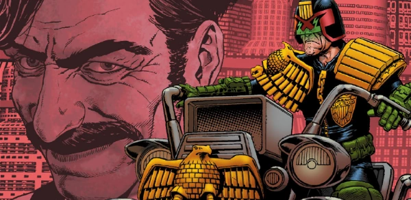

A highly creative serial killer (Philip Janet Maybe) that manages to always stay one step ahead of Dredd: but his thirst for dominance is potentially his greatest weakness.
Art by Chris Weston
| Story Title | Parts | Pages | w indicates a wraparound coverCovers | Year(s) | Issues | Writer | Artist | Colourist | Letterer |
|---|---|---|---|---|---|---|---|---|---|
From Judge DreddBug | 1 | 8 | Liam McCormack‑Sharp 1 | 1987 | Reprints: X2534 | Alan Grant John Wagnervarious | Liam McCormack-Sharp | <-- pp2-3, [b&w] | Tom Frame |
From Judge DreddWhat I Did During the Summer Holidays by P.J.Maybe | 3 | 18 | 592: Liam McCormack‑Sharp 1 | 1988 | Reprints: X2592-594 | John Wagner | Liam McCormack-Sharp | <-- | Tom Frame |
From Judge DreddThe Further Advenshers of P.J.Maybe age 14 | 1 | 6 | 0 | 1988 | Reprints: X2599 | John Wagner | Liam McCormack-Sharp | <-- | Tom Frame |
From Judge DreddThe Confeshuns of P.J.Maybe | 3 | 22 | 634: John Higgins 1 | 1989 | Reprints: 2KYB'95 X2 632-634 | John Wagner | Liam McCormack-Sharp | [b&w] | Tom Frame |
From Judge DreddWot I Did During Necroplis | 3 | 18 | 707: Anthony Williams 709: Anthony Williams 2 | 1990 | Reprints: X2707-709 | John Wagner | Anthony Williams | <-- | Tom Frame |
From Judge DreddP.J. & The Mock-Choc Factory | 3 | 19 | 820 [g]: Greg Staples 822 [g]: Mick Austin 2 | 1993 | Reprints: X2820-822 | Garth Ennis | Anthony Williams | <-- | Tom Frame |
From Judge DreddThe All New Adventures of P.J.Maybe | 1 | 6 | 0 | 2000 | Reprints: X21204 | John Wagner | Peter Doherty | Chris Blythe | Tom Frame |
From Judge DreddYou're a Better Man Than I Am, Gunga Dinsdale | 1 | 6 | 0 | 2000 | Reprints: X21210 | John Wagner | Ben Oliver | Dondie Cox | Tom Frame |
From Judge DreddBring Me the Heart of P.J.Maybe | 1 | 6 | Andy Clarke 1 | 2000 | Reprints: X21211 | John Wagner | Ben Oliver | Dondie Cox | Tom Frame |
From Judge DreddSix | 2 | 24 | 0 | 2004 | M221-M222 | John Wagner | Chris Weston | <-- | Tom Frame |
From Judge DreddThe Monsterus Mashinashuns of P.J. Maybe | 4 | 50 | M231: Chris Weston 1 | 2005 | M231-M234 | John Wagner | Carlos Ezquerra | <-- | Tom Frame |
From Judge DreddThe Gingerbread Man | 3 | 30 | M262: Cliff Robinson 1 | 2007 | M261-M263 | John Wagner | Henry Flint | Len O'Grady | Annie Parkhouse |
From Judge DreddWhat i Did for ChrissMas | 1 | 10 | 0 | 2007 | M266 | John Wagner | Simon Fraser | Gary Caldwell | Annie Parkhouse |
From Judge Dredd Full title: "Emphatically Evil: The Life and Crimes of PJ Maybe".Emphatically Evil | 7 | 42 | 1569: Simon Davis 1572: Cliff Robinson 2 | 2008 | 1569-1575 | John Wagner | Colin MacNeil | Chris Blythe | Annie Parkhouse |
From Judge Dredd Featuring The Fargo Clan.…Regrets | 5 | 30 | 1579: Karl Richardson 1 | 2008 | 1577-1581 | John Wagner | Nick Dyer | Chris Blythe | Annie Parkhouse |
From Judge Dredd Main subtitle: "Tour of Duty".The Talented Mayor Ambrose | 13 | 78 | 1681: Ben Willsher 1684: Cliff Robinson 2 | 2010 | 1674-1686 | John Wagner | John Higgins | Sally Hurst | Annie Parkhouse |
From Judge Dredd Main subtitle: "Tour of Duty".Mega-City Justice | 7 | 42 | 1690: Greg Staples 1 | 2010 | 1687-1693 | John Wagner | Carlos Ezquerra Hector Ezquerravarious | <-- | Annie Parkhouse |
From Judge DreddThe Further Dasterdly Deeds of PJ Maybe | 3 | 18 | 1741: Garry Brown 1 | 2011 | 1740-1742 | John Wagner | Colin MacNeil | Chris Blythe | Annie Parkhouse |
From Judge Dredd Main subtitle: "Day of Chaos".Nadia | 8 | 49 | 1743: Clint Langley 1749: Garry Brown 2 | 2011 | 1743-1749 | John Wagner | Ben Willsher | Chris Blythe | Annie Parkhouse |
From Judge Dredd Main subtitle: "Day of Chaos".Elusive | 6 | 36 | 1753: Paul Marshall & Abigail Bulmer 1 | 2011 | 1753-1758 | John Wagner | Henry Flint | Chris Blythe | Annie Parkhouse |
From Judge Dredd Main subtitle: "Day of Chaos". Full title: "Wot I Did During the Worst Disaster in Mega‑City History".Wot I Did During... | 1 | 6 | 0 | 2012 | 1786 | John Wagner | Henry Flint | Chris Blythe | Annie Parkhouse |
From Judge DreddDark Justice | 11 | 66 | p2015: Greg Staples [thematic wraparound] 1915: Greg Staples 1921: Greg Staples [wraparound] 2,1w | 2014-2015 | Reprints: http://goo.gl/mgqoWw p2015, 1912-1921 | John Wagner | Greg Staples | <-- | Annie Parkhouse |
From Judge DreddSerial Serial | 5 | 30 | 1953: Ryan Brown 1 | 2015 | 1950-1954 | John Wagner | Colin MacNeil | Chris Blythe | Annie Parkhouse |
From Judge DreddLadykiller | 8 | 48 | 1991: Neil Roberts 1994: Ben Willsher 1998: Paul Marshall (a), Chris Blythe (c) 3 | 2016 | 1991-1998 | John Wagner | Carlos Ezquerra | <-- | Annie Parkhouse |
From Judge DreddPoison | 8 | 50 | 2353: Alex Ronald 2357: Cliff Robinson & Dylan Teague2 | 2023 | 2351-2355, 2357-2359 | Rob Williams | PJ Holden | Peter Doherty | Simon Bowland |
| >> Posters << | |||||||||
From Judge Dredd Star Scan. Featuring Judge Dredd.P.J. Maybe … What Next? | 1 | 1 | 0 | 1989 | 639 | n/a | Liam McCormack-Sharp | <-- | n/a |
| >> Floating Covers << | |||||||||
| Definitive Maybe | ~ | ~ | 1 | 2004 | X2 | n/a | Cliff Robinson | Len O'Grady | n/a |
| year | episodes | pages |
| 1985 | 0 | 0 |
| 1986 | 0 | 0 |
| 1987 | 1 | 8 |
| 1988 | 4 | 24 |
| 1989 | 3 | 22 |
| 1990 | 3 | 18 |
| 1991 | 0 | 0 |
| 1992 | 0 | 0 |
| 1993 | 3 | 19 |
| 1994 | 0 | 0 |
| 1995 | 0 | 0 |
| 1996 | 0 | 0 |
| 1997 | 0 | 0 |
| 1998 | 0 | 0 |
| 1999 | 0 | 0 |
| 2000 | 3 | 18 |
| 2001 | 0 | 0 |
| 2002 | 0 | 0 |
| 2003 | 0 | 0 |
| 2004 | 2 | 24 |
| 2005 | 4 | 50 |
| 2006 | 0 | 0 |
| 2007 | 4 | 40 |
| 2008 | 12 | 72 |
| 2009 | 0 | 0 |
| 2010 | 20 | 120 |
| 2011 | 17 | 103 |
| 2012 | 1 | 6 |
| 2013 | 0 | 0 |
| 2014 | 1 | 6 |
| 2015 | 15 | 90 |
| 2016 | 8 | 48 |
| 2017 | 0 | 0 |
| 2018 | 0 | 0 |
| 2019 | 0 | 0 |
| 2020 | 0 | 0 |
| 2021 | 0 | 0 |
| 2022 | 0 | 0 |
| 2023 | 8 | 50 |
| 2024 | 0 | 0 |
| 2025 | 0 | 0 |
Comic strip data (excludes other content):